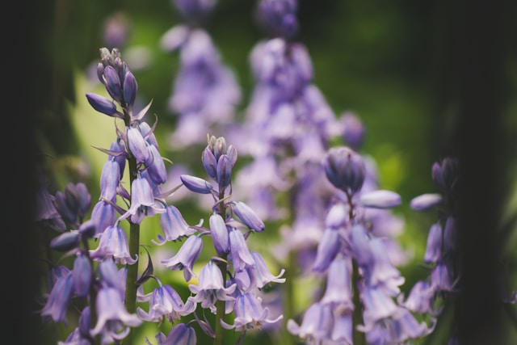
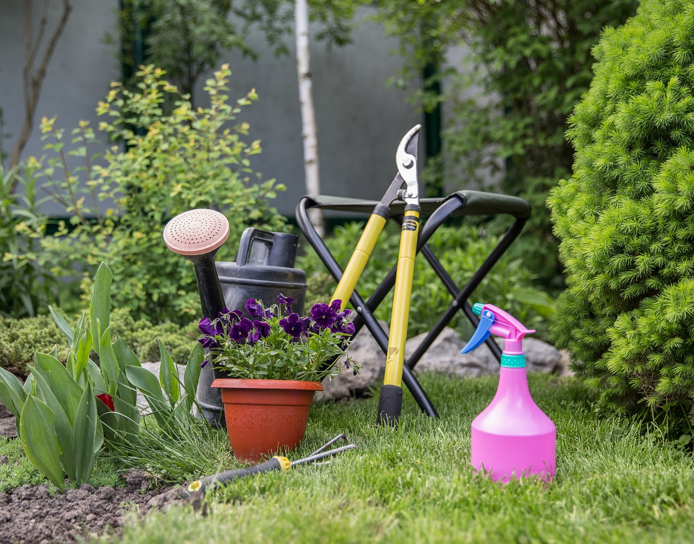

Plantas de Interior

Las plantas de interior son una excelente opción para mejorar la calidad del aire en el hogar y darle vida a cualquier espacio. Algunas de las plantas más populares que encontrarás en nuestra tienda incluyen la Monstera Deliciosa, el Potos, la Sansevieria (Lengua de Suegra), y el Ficus Lyrata.
Las plantas de interior requieren condiciones específicas para crecer de manera óptima. Es importante proporcionarles suficiente luz indirecta, ya que muchas de estas plantas no toleran el sol directo. Además, asegúrate de mantener una buena humedad en la habitación, ya que las plantas tropicales suelen prosperar en ambientes húmedos.
La Monstera, por ejemplo, es conocida por sus hojas grandes y con agujeros naturales. Es ideal para aquellos que buscan una planta llamativa y de fácil cuidado. Necesita ser regada cada una o dos semanas, dependiendo del nivel de humedad del ambiente.
La Sansevieria, por otro lado, es perfecta para principiantes. Es conocida por su capacidad de purificar el aire y por su resistencia a condiciones adversas, incluyendo la falta de riego. Esta planta solo necesita ser regada cada 3-4 semanas y puede tolerar bajos niveles de luz.
El Potos es otra gran opción, ya que es una planta colgante que crece rápidamente y puede adaptarse a diferentes niveles de luz. Esta planta es perfecta para colgar en estantes o colocar sobre muebles altos, creando una atmósfera relajante en el hogar.
Recomendamos también el uso de fertilizantes naturales para nutrir las plantas de interior y ayudarlas a mantener su vitalidad. Además, asegúrate de limpiar las hojas regularmente para quitar el polvo acumulado, lo cual ayuda a la fotosíntesis.
Plantas de Exterior
Nuestra selección de plantas de exterior está diseñada para ofrecer una amplia variedad de colores y formas para tu jardín. Algunas de las opciones más populares son las hortensias, lavanda, rosales, y suculentas resistentes.
Las hortensias son conocidas por sus grandes ramilletes de flores y su capacidad para cambiar de color según el pH del suelo. Puedes encontrar hortensias de color azul, rosa o blanco, que se adaptan perfectamente a cualquier jardín. Estas plantas requieren un suelo bien drenado y luz solar indirecta.
La lavanda, con su característico aroma, es una excelente opción para aquellos que desean atraer polinizadores como abejas y mariposas. Además, la lavanda es resistente a la sequía, por lo que requiere poco mantenimiento. Se recomienda plantarla en una zona con mucho sol y asegurarse de que el suelo drene bien.
Los rosales son otra planta clásica de los jardines. Ofrecen hermosas flores durante la temporada de primavera y verano. Es importante podar los rosales en el invierno para fomentar un crecimiento saludable. Además, necesitan riego regular, especialmente durante los meses cálidos.
Las suculentas resistentes, como el Aloe Vera y las Echeverias, también son una excelente opción para el jardín. Estas plantas almacenan agua en sus hojas, por lo que no requieren riegos frecuentes. Son ideales para zonas con sol directo y requieren un suelo arenoso que permita un buen drenaje.
Si deseas crear un espacio verde que sea a la vez hermoso y útil, te recomendamos plantar hierbas aromáticas como romero, tomillo y menta. Estas plantas no solo añaden un toque de verde al jardín, sino que también puedes usarlas en la cocina para preparar deliciosos platos.
Accesorios de Jardinería
Para mantener tus plantas saludables y asegurar su correcto crecimiento, ofrecemos una amplia variedad de accesorios de jardinería. Entre los más populares se encuentran macetas decorativas, herramientas para el cuidado de las plantas, fertilizantes y sistemas de riego.
Las macetas decorativas están disponibles en diferentes tamaños y estilos, ideales para plantas de interior y exterior. Tenemos macetas de barro, cerámica y plástico reciclado, cada una con un diseño único que complementará tu hogar o jardín.
Las herramientas de jardinería, como palas, rastrillos, y tijeras de podar, son esenciales para el cuidado de las plantas. Las tijeras de podar, por ejemplo, son necesarias para mantener la forma y el tamaño adecuado de tus plantas. La poda ayuda a fomentar un crecimiento saludable y previene la aparición de plagas.
También ofrecemos guantes de jardinería, que son indispensables para proteger tus manos durante las tareas de plantación, poda y remoción de malas hierbas. Los guantes están hechos de materiales resistentes y duraderos, que aseguran la comodidad y la protección necesarias.
Los fertilizantes naturales y orgánicos ayudan a proporcionar los nutrientes esenciales que tus plantas necesitan para crecer fuertes y saludables. Tenemos fertilizantes en formato líquido y en polvo, adecuados para diferentes tipos de plantas, desde suculentas hasta plantas de floración.
Finalmente, ofrecemos sistemas de riego que te permitirán regar tus plantas de manera eficiente, asegurándote de que reciban la cantidad adecuada de agua. Los sistemas de riego por goteo son particularmente útiles, ya que proporcionan agua directamente a la raíz de cada planta, evitando el desperdicio.
Además, puedes encontrar accesorios como tutores para plantas trepadoras, platos para macetas, y etiquetas para identificar cada planta de tu jardín. Estos elementos son pequeños pero esenciales para mantener un jardín bien organizado y en excelentes condiciones.